Overview
Koios Automation Platform (KAP) is a community automation platform built from the Ansible open source projects: automation controller (AWX), Event-Driven Ansible (eda-server and ansible-rulebook) and automation hub (galaxy_ng), behind a single platform gateway and user interface. It runs on OpenShift and Kubernetes and is managed by operators.
Components
Component |
What it does |
Upstream project |
|---|---|---|
Platform gateway |
Single entry point: login, users, organizations and teams for every service, API routing |
Jewel, with Envoy as proxy |
Platform UI |
One web interface for the whole platform |
ansible-ui |
Automation controller |
Inventories, credentials, projects, job templates and jobs |
AWX |
Event-Driven Ansible |
Rulebook activations that react to events and launch automation |
eda-server, ansible-rulebook |
Automation hub |
Ansible collections and execution environment images |
galaxy_ng |
Execution environment |
Container image where jobs run |
Koios EE (ansible-core 2.18) |
Decision environment |
Container image where rulebooks run |
Koios DE |
PostgreSQL, Redis |
Platform database and cache (managed, or your own) |
PostgreSQL 15, Valkey 8.1 |
Architecture

The KoiosPlatform resource describes the whole platform. Four operators reconcile it: the
gateway operator owns the platform (gateway, UI, shared database and Redis) and creates one
resource per service, which the controller, EDA and hub operators deploy.
Releases
Releases are named <year>.<month>.<patch> (for example 2026.11.5) and published in the private
registry ghcr.io/koiosplatform, with every image pinned by digest. Each month has two OLM channels:
stable-<year>.<month> and stable-<year>.<month>-cluster-scoped; every release of the month
replaces the previous one, so clusters subscribed with automatic approval (as the installer does)
upgrade when their catalog points to the new release; see Upgrades. See
Releases for the current release and its images.
A release with a known defect is reissued with the same number; its release notes say how to reinstall it (Upgrading).
Licenses and notices
Each image carries its licenses in /licenses/koios/: the license file of its upstream project
when the project publishes one (eda-server-operator does not; its image carries a Koios notice
instead) and the Koios license and notice. From 2026.11.7, when Koios modifies the upstream source,
the image also carries NOTICE.modifications with those changes and the files they touch, every
upstream file that Koios patches carries a dated Koios modification comment, and the NOTICE of
the installer lists every modification.